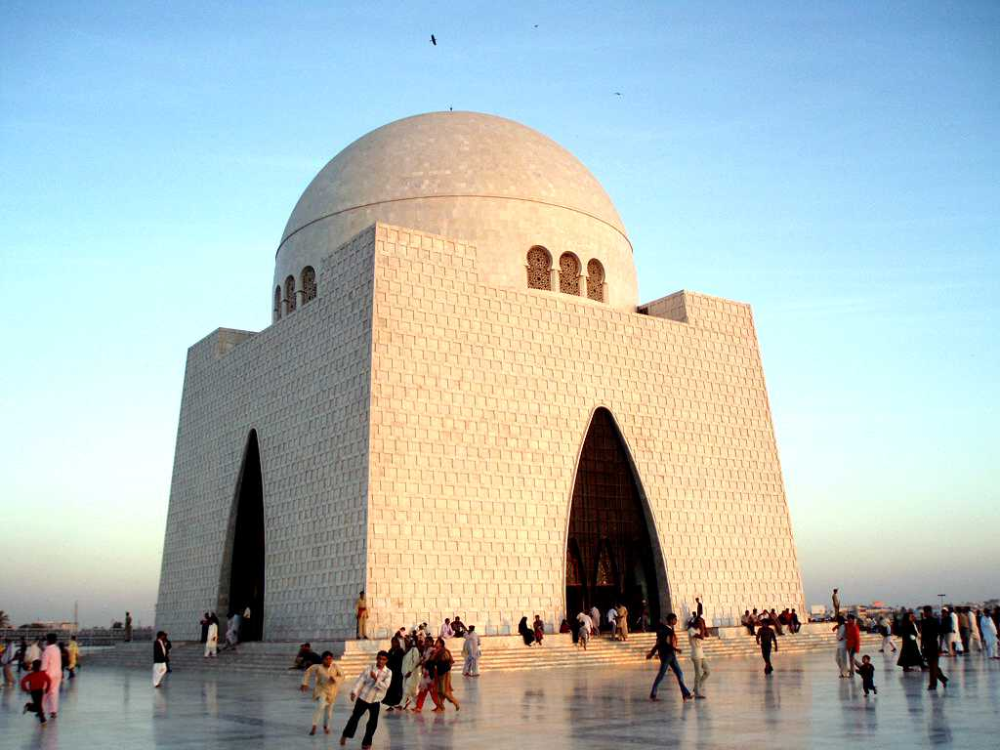
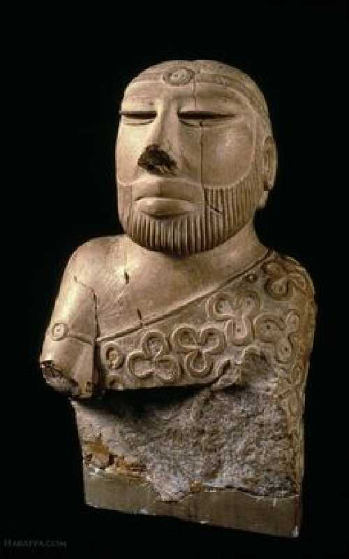
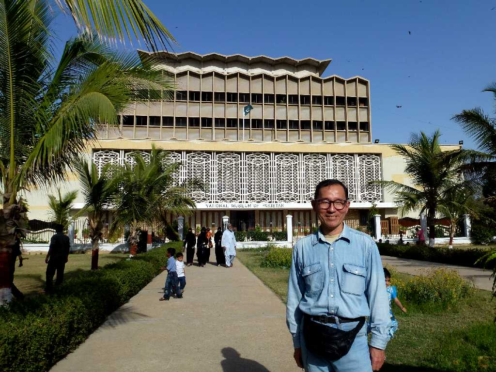

Jinnah Tomb Karachi
白大理石で創られたパキスタン創立の父ジンナーの廟

King Priest Mohenjodaro National Museum Karachi
モヘンジョダロ遺跡から出土した紀元前２６００年頃創られたと考えられている１０００℃以上の高熱で焼かれた白色ソープストーンの神官王像

March 23 2013 National Museum Karachi